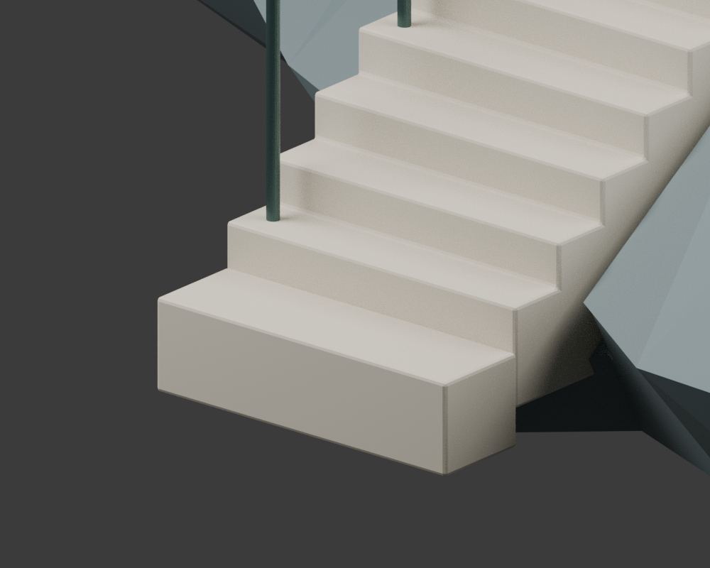
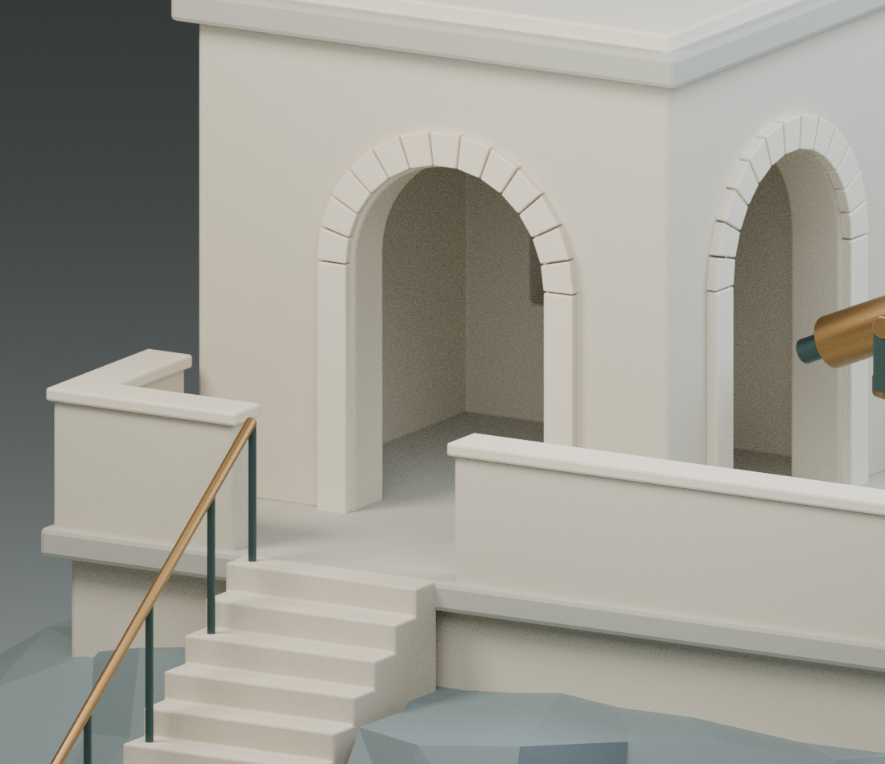
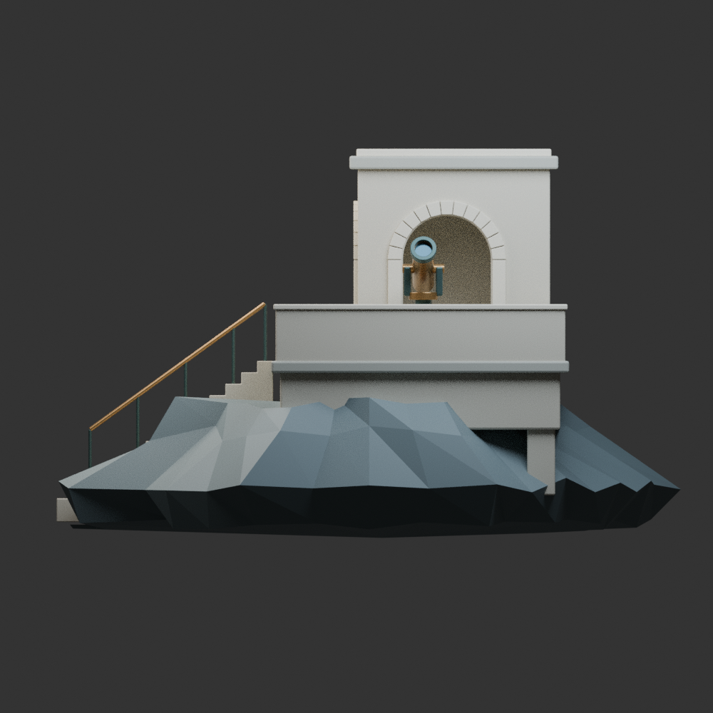
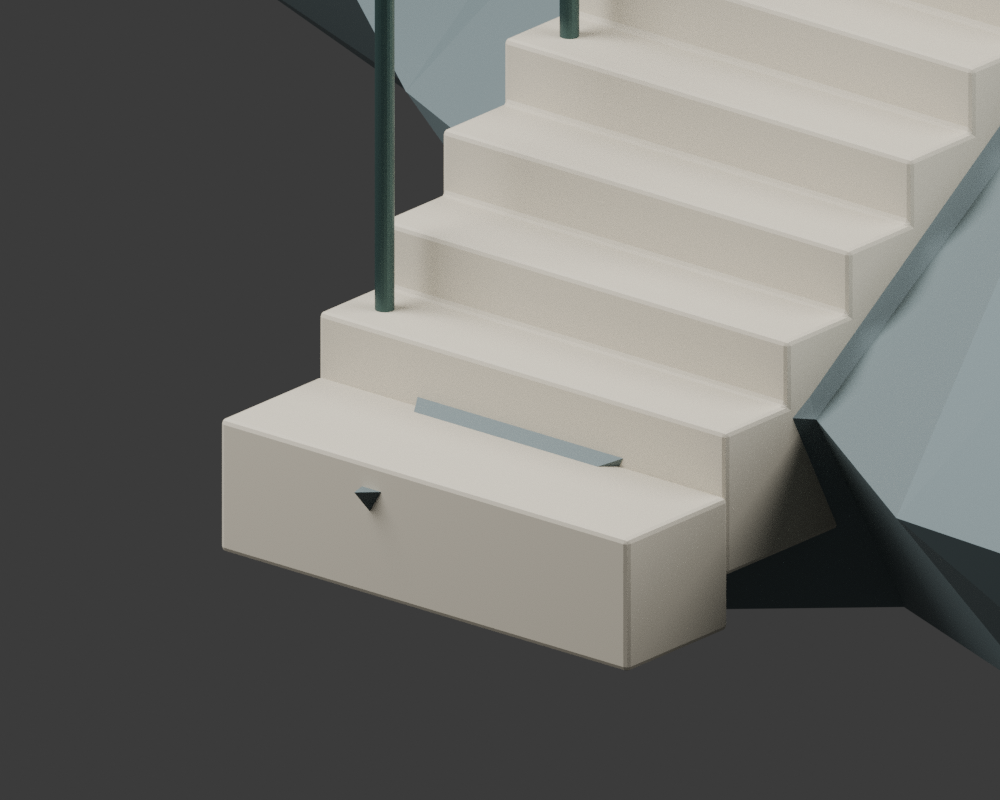

01 / ARRIVAL
先找到落脚处。
建筑的起点不是拱门，而是岩岸与第一道踏步的交界。沿着浅色台阶，辨认从不规则岩面转入规则构件的边界。
观察问题 / 第一踏步前缘是否清晰？岩石有没有侵入通行表面？

LIMEN / COASTAL OBSERVATORY
从岩岸抵达，穿过门廊，
把视线交给远方。
原创建筑形态习作
石灰岩 · 岩岸 · 青铜
非施工、结构或合规设计
 BLENDER · 离线图
BLENDER · 离线图日光总览：观察建筑体量与岩岸的相接关系。
正在检查实时能力；上方离线视图始终可用。
01 / ARRIVAL
建筑的起点不是拱门，而是岩岸与第一道踏步的交界。沿着浅色台阶，辨认从不规则岩面转入规则构件的边界。
观察问题 / 第一踏步前缘是否清晰？岩石有没有侵入通行表面？

02 / THRESHOLD
连续踏步将视线抬高，门廊把开阔的岩岸收束为一道门洞。厚墙的阴影与穿透后的亮面，建立进入的方向。
观察问题 / 踏步如何接到平台？拱口是否真实贯通，而不是墙上的图案？

03 / OBSERVATION
低露台承托青铜望远镜，偏置观测室成为唯一高点。回看整体，辨认门廊、露台与上部体量如何依次展开。
观察问题 / 观测装置与建筑主次是否清楚？露台是否保留足够的视觉留白？

REVISION EVIDENCE / NOT A SECOND DESIGN
初始抵达图记录旧版岩体侵入问题。修复后图是最新几何。两张图是迭代证据，不是两种可选造型；精确检查范围见几何记录。

全部图像来自真实模型的离线渲染。当前云端 WebGL 禁用；实时深度闪烁、真实手机表现与工程可行性未验。离线检查不等于全部穿插归零。
SOURCE & REVIEW
16,232 三角面 / 原创 Blender → glTF